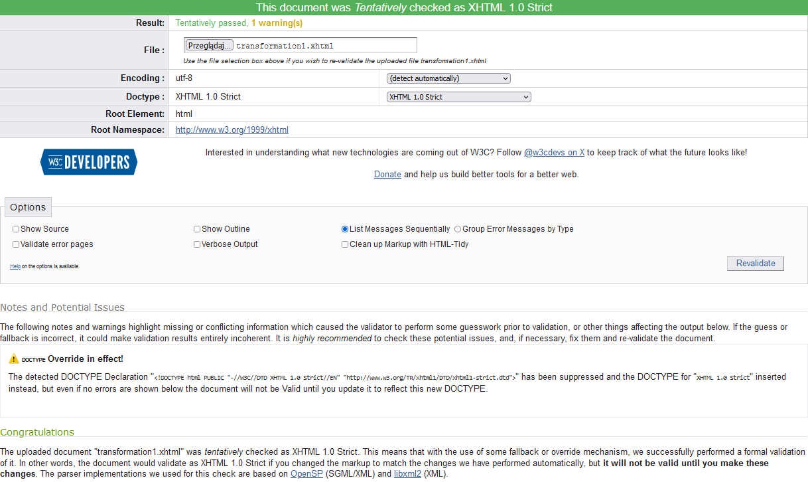

Menu 4 - XSLT transformations
Main Menu
Menu 1
Menu 2
Menu 3
Menu 4
XSLT transformation 1 - XHTML page
Press here to see transformation of my XML Document to the XHTML page with some statistics (new window).
Well validation of XSLT 1.0 strict transformation:

I validated my transformation on this page:
https://validator.w3.org/check
XSLT transformation 2 - text document
Press here to see transformation of my XML Document to the text table (new window).
XSLT transformation 3 - SVG chart
Press here to see transformation of my XML Document to the SVG char (new window).
Back to the previous page - XML Schema
Return to the Main Menu
There aren't any next pages